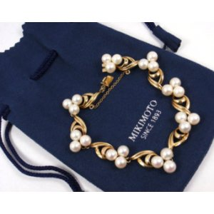
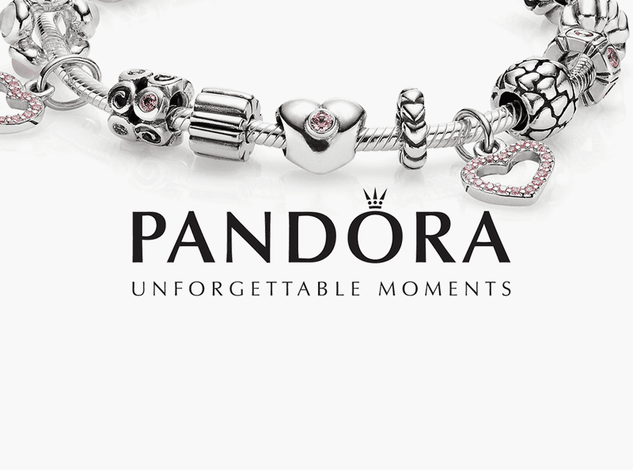
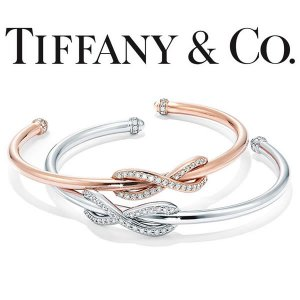

Мировые ювелирные бренды
Истории создания и развития компаний производителей ювелирных изделий, аксессуаров, одежды: Gicci, Fossil, Tiffany. Nialaya, Pandora, Baraka, Nomination, Adami & Martucci. Интересные факты и истории из жизни мировых лидеров индустрии красоты.
Смелые идеи находят воплощение в чувственных украшениях
Ювелирный бренд Луи Картье почитается во всем мире не только рядовыми потребителями, но и представителями
монарших семей
и богатых сословий. Отличительная черта этих украшений – в изысканности и роскоши форм, в неповторимом
природном дизайне
и пышной инкрустации изделия камнями
Свою историю бренд начинает во Франции.
В 1847 году молодой и очень перспективный
ювелир Луи-Франсуа Картье решается
выкупить у своего наставника небольшую мастерскую. В его распоряжении с уже готовыми украшениями оказались
инструменты и
материалы. И он начинает выполнять заказы именитых в Париже персон. Его первые обручальные кольца и колье
буквально
вызывают ажиотаж. Природные мотивы, отчетливо узнаваемые в украшениях, влюбляют в себя и завораживают. Камни
в них сияют
с особой четкостью, золото переливается, будто солнечные лучи. В каждом шедевре обязательно присутствуют
дорогие
бриллианты, сапфиры и изумруды в прелестной огранке, подчеркивающей все чувственность этих самоцветов.
MIKIMOTO: ТАЙНА ИДЕАЛЬНОГО ЖЕМЧУГА РАСКРЫТА!
Свою ювелирную империю Кокити
Микимото открыл в 1875 году, когда вместе со своей молодой супругой купил первую
устричную
ферму.

Японец строго решил: он сможет создать искусственный жемчуг идеальной формы, с приятным
перламутровым
блеском
и
натуральным природным окрасом. И этими драгоценностями он сумеет порадовать каждую модницу. Культивирование
жемчужин
началось с малого. Долго и кропотливо Кокити выращивал первую перламутровую
красавицу. Сначала у него
получались
неровные и не сияющие шарики.
Но успех принес 1896 год, когда изобретателю удается получить первую идеальную жемчужину. Микимото патентует
свои
наработки. Он начинает создавать белые, черные, розовые и золотистые «камушки», украшает ими колье,
подвески, серьги
и
перстни. Все украшения Mikimoto создаются строго в таком стиле, чтобы центральное место отдавалось жемчугу.
Драгоценная
оправа и инкрустация остаются на втором месте.
PANDORA – ОДИН ИЗ САМЫХ УЗНАВАЕМЫХ БРЕНДОВ
Кто бы мог подумать, но революционная компания начинала свою деятельность 35 лет назад как небольшая ювелирная фирма в Копенгагене. Pandora выпускает изумительные цепочки с кулонами, кольца, серьги, но больше всего ценятся браслеты Пандора. Их уникальность в том, что украшение можно бесконечно комбинировать и изменять. Пандора бусины и другие всевозможные фигурки, которые нанизываются на браслет, называет шармами. Они могут быть на различную тематику: животные, орнамент, сказки, путешествия, профессии, буквы, всё что угодно. Стиль Пандора стал одним из самых популярных в мире. 
Tiffany & Co.
Tiffany & Co.Бирюзовая коробочка. Любая женщина придёт от неё в восторг. Ведь она знает – это фирменная
упаковка Tiffany
& Co. и внутри её ждёт необычайно приятный подарок. Эта компания, которая не требует презентации, о ней
слышал каждый,
её знают во всём мире. Это настоящий ветеран в индустрии моды, который существует
с 1837 года!
Основатели компании начинали с обычного магазина канцелярских товаров и галантереи на Бродвее. Он назывался
на «Tiffany
& Young». Через 4 года к ним присоединился ещё один партнёр Джей Эл Эллис и магазин переименовали в
«Tiffany, Young &
Ellis». Ассортимент расширили часами, ювелирным и столовым серебром, ещё через год золотыми ювелирными
изделиями.

- Я очень расстроен, что так поздно узнал о курсе и мне приходится догонять!!!!!!!!
- Очень интересно!!!
- Как и везде есть умники!!!
- Впервые с этим столкнулся!!!
- И я надеялся, что будет не много легче)